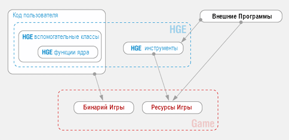
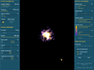
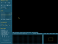

|
HGE version 1.53
Copyright © 2003-2005, Relish Games. All rights reserved.
http://hge.relishgames.com
Обзор
HGE легкий в использовании и в тоже время мощный 2d игровой движек с поддержкой
аппаратного ускорения. Это полнофункциональное посреднеческая библиотека для всех, кто хочет
разрабатывать быстро и легко качественные коммерческие 2D игры. Она покрывает все возможные 2D
жанры: вы можете создать все, начиная от простых игр-головоломок до продвинутых многослойных
платформеров и стратегий не думая о неигровой коде вообще! И вам совершенно не надо знать ничего о "оконных сообщениях",
программировании под DirectX и всякомо таком. Напротив, вы можете начать разработку своей
собственной игры втечение 15 минут!
HGE работает на Microsoft Windows 98, 2000, NT, ME, XP and требует DirectX 8.0.
Она даже запустится на low-end видеокартах, включая встроенные, такие как Intel Solano (i815 chipset).
HGE можно использловать практически с любым C++ компилятором включая
Visual C++, Borland C++, MinGW и Metrowerks Codewarrior.
Ключевые возможности
|
Строгая концентрация на "2D играх"
Проблемно-ориентированный дизайн. Ничего лишнего и множество высокоуровненвых функций. |
 |
|
Простой интерфейс и черезвычайная легкость
Вам не надо ничего знать о системном программировании и не нужны дополнительные библиотеки. Классы и
заголовочные файлы - все что нужно. Очень легко установить и пользоваться. |
|
|
Технические преимущества
HGE построен на современном Direc3D API, что позволяет множество спецэффектов и отличную
производительность. Альфа-смешивание, оттенки, геометрические преобразования и т.д. без каких либо
падений производительности! |
|
|
Полная и понятная документация
Все возможности сгруппированы и полностью описаны, предоставлено много советов полезных для любых
игр. |
|
|
HGE just feels right!
HGE строго последовательный. Каждая функциональность тщательно планируются имеет взаимосвязь с
остальными. |
|
|
Доступность!
HGE - свободна для некоммерческого использования. Существуют также доступная shareware и коммерческая лицензии. |
Архитектура
HGE представляет три абстрактных слоя, покрывающие всевозможные требования одиночного
программиста игр или команды:
| Функции ядра |
Вспомогательные классы |
Внешние инструменты |
| Все системно-зависимые функции и процедуры. |
Классы для игровых объектов высокого уровня. |
Набор инструментов, необходимый для разработки игр. |

Функции ядра
Аппаратное ускорение 2D графики
Поддержка форматов BMP, DDS, DIB, JPG, PNG, TGA; оконный или полноэкранный режимы;
точное тексель-в-пиксель отображение; произвольные формы вывода; рисование линиий или заполненных
областей; рендеринг в текстуру; прямой доступ к данным текстуры; отсекаюшие области; различные виды
смешивания; альфа-каналы и смешивание; подсветка; преобразования целых сцен; z-буфер.
Звуковые эффекты и проигрывание музыки
Поддержка форматов WAV, MP3, MP2, MP1 и OGG для звуковых файлов;
поддержка MO3, IT, XM, S3M, MTM, MOD и UMX форматов музыки;
воспроизведение сжатых потоков; регулируемая громкость, панорамирование и контроль высоты.
Устройства ввода: клавиатура и мышь
Определеяет состояние клавиш и нажатий; определяет название клавиш; преобразует коды клавиш в
символы; определяет положение мыши и ролика; событийная и опросная обработка устройств ввода.
Ресурсы
Загрузка ресурсов из дисковых файлов; загрузка из ZIP архива (пакет ресурсов);
легкое переключение между этими режимами; поддержка много-пакетных ресурсов.
Работа со временем
Синхронизация частоты кадров с нефиксированным FPS; режим фиксированного FPS; слежение за частотой
обновления; подсчет FPS; обработка времени простоя.
Инициализация и файл протокола
Читает и пишет строки, целые числа и числа с плавоющей запятой; вывод протокола в формате printf.
Вспомогательные классы
Спрайты и анимация
Прозрачный интерфейс ко всем функциям железа; поддержка точки привязки (якорь); поддержка
вытягивания, вращения и масштабирования; горизонтальное и вертикальное отражение; функции работы с
временем; различные режимы проигрывания.
Шрифты
Загрузка и отображение растровых шрифтов; различные способы выравнивания текста; тень,
масштабирование и вращение текста; вычисление длины строки; формат printf для функций вывода.
Система частиц и сетка искажения
Продвинутая 2д система частиц, позволяющая создавать такие эффекты, как дым, взрывы, магия и т.д;
менеджер системы частиц; функции работы со временем и перемещением; ограничивающий прямоугольник и
определение столкновений; вода, линзы, скрутка страницы, изгиб и даже морфинг в реальном времени.
Менеджер ресурсов
Powerful resource script; on the fly script switching; create complex
objects with just a single function call; fully automated memory management;
precaching and purging of specific resource groups.
Графический интерфес пользователя
Простое и гибкое управление контролами; стандартные контролы: текст, кнопки и ползунки; поддержка
сильно активных, анимированных ГУИ.
Векторы и цвета
Полный набор операций и функций для поддержки 2д векторов; полный набор операций для вычислений с
цветами в формате ARGB; аппаратное преобразование цветов; фиксирование цветов.
Определение столкновений
(в разработке)
Ориентированные ограничивающие прямоугольники (OBB), определение столкновений по радиусу и
попиксельное; определение столкновений в преобразованных объектах; проверка развертки; гибко
настраиваемые функции.
Тайловые карты
(в разработке)
Многослойные карты; карты прокрутки; манипуляции со свойствами тайлов; анимация тайлов;
пользовательские тайловые кисти; преобразование координат; отсечение карт.
Внешние инструменты
|
|
Упаковщики ресурсов
HGE пользуется широкораспространенным форматом архивов ZIP для упаковки ресурсов. Поэтому вы можете
упаковывать ресурсы в своей игре своим любимым упаковщиком. Можете даже защитить их паролем.
|
|
|

|
Редактор систмем частиц
Позволяет визуально редактировать все параметры продвинутой 2д системы частиц. Вы можете изменять
направления, скорости, время жизни, траектории, цвет и прозрачность частиц и т.д., при этом
наблюдая изменения в реальном времени.
|
|
|
|
Редактор Растровых Шрифтов
(в разработке)
Позволяет строить готовые к использованию шрифты, используя установленные системные шрифты или
готове изображения. Вы можете назначать диапазоны символов и пробелов, использовать альфа-каналы и
цвет. Потом добавить дополнительные эффекты в построенный шрифт в своем графическом редакторе.
|
|
|

|
Редактор тайловых карт
(в разработке)
Позволяет рисовать карты из тайлов, анимаций и редактировать свойства тайлов. Также поддерживаются
кисти шаблонов, областей и путей. Вы можете использовать неограниченное число видимых и скрытых
слоев и определять их свойства.
|
|
|